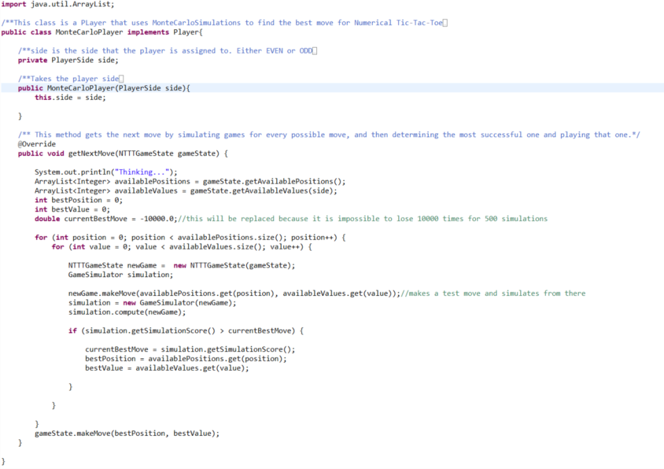
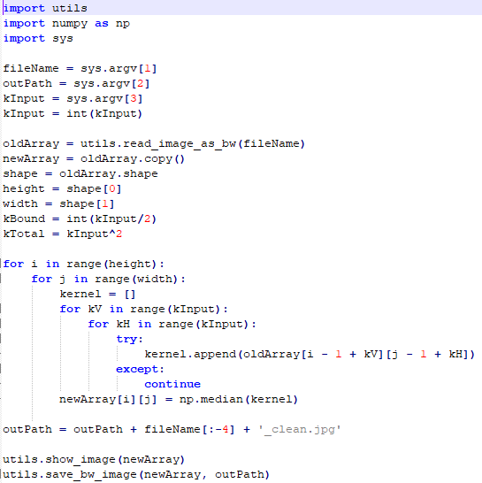
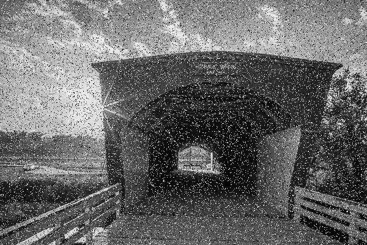
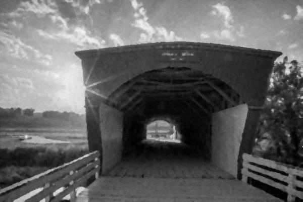

Three cool projects I've worked on:
Monte Carlo Tic Tac Toe
We all did this project in CISC 230, but it really stood out to me as a watershed moment in my computer science career. It showed me how easy it was to take advantage of the magic of computers.We had to create a number of "bots" to play a modified version of Tic Tac Toe, and these bots varied in difficulty. The hardest bot was supposed to be unbeatable, and it was very interesting to see how it worked.
Noise Reduction
This lab is much more recent, completed for my Computer Vision course this fall. We were supposed to create a program that took in "noisy" images and changed their pixel values to create a more clear, less "noisy" immage. This lab wasn't overly difficult, but it was very interesting. It showed me that image manipulation is actually pretty fast and fairly straightforward.
  Risk and Estimation Assessment Neural Network
As part of my internship at Mortenson Construction, my team has been tasked with creating a machine learning model that can accurately return project completion estimations and safety risks based on a number of provided job site factors. Unfortunately, this model isn't my property and I'm not supposed to show it. However, conceptually, I think it's pretty cool, and it's been a great experience for me thus far.
Return to home page